1088D10 lower sleeve for coolant outlet from radiator - r + r
- Path
- Procedures > 10 ENGINE > 1088 ENGINE COOLING > 1088D COOLANT PIPES AND HOSES > 1088D10 lower sleeve for coolant outlet from radiator - r + r
- Kind
- repair procedure (removal / refitting; the operation number is the code)
- Applies to
- all engines; all production periods
- Interactive page
- https://sloeber94.github.io/elrnDB-fDbl/en/#/2584310
Applies to: engines: 1.2 8v; all production periods
 Removing
Removing
 Refitting
RefittingOp. 5530B52 BATTERY SUPPORT/DRIP TRAY - R.R.
1. Undo the fixing bolts (1a) and release the filter casing retaining clips (1b).
2. Release the cold air intake (2a) from the retaining collar (2b).
3. Raise the air filter casing with cold air intake, releasing from oil vapour recovery sleeve (3a), then remove assembly (3b).
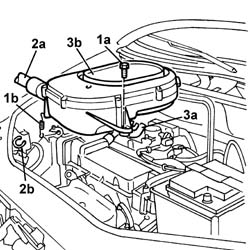
Applies to: engines: 1.2 8v; all production periods
Position the vehicle on a lift.
Op. 7055B54 PROTECTION/GUARD UNDER ENGINE - R.R.
Position a suitable container under the vehicle to collect the coolant.
1. Disconnect the lower pipe from the radiator and drain the water into the container.
2. Disconnect the pipe from the fitting on the coolant reservoir (2a) from the rigid water pump pipe (2b) and from heater (2c), then remove pipe assembly (2d).
Remove the coolant collection container from beneath the vehicle.
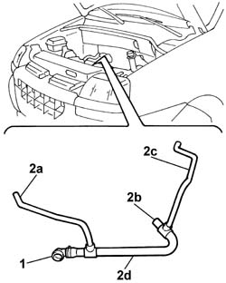
Applies to: engines: 1.2 8v; all production periods
Refitting
RemovingConnect the sleeve on the engine coolant reservoir on the rigid water pump pipe and on the heater connection.
Connect the lower pipe to the radiator
Fit the air filter casing with cold air intake, securing the oil vapour recovery sleeve to the casing.
Secure the cold air intake to the retaining collar.
Tighten the retaining bolts and secure the filter casing clips.
Op. 0010T20 ENGINE COOLANT - CHANGE
Op. 5530B52 BATTERY SUPPORT/DRIP TRAY - R.R.
Op. 7055B54 PROTECTION/GUARD UNDER ENGINE - R.R.
Remove the vehicle from the lift.
Applies to: engines: 1.6 16v; all production periods
Removing
RefittingPosition the vehicle on a lift.
Disconnect the negative battery terminal.
Description | Connector | |
|---|---|---|
- | Battery |
Op. 7055B54 PROTECTION/GUARD UNDER ENGINE - R.R.
1. Arrange a suitable container beneath the vehicle to recover the engine coolant; then open collar (1a) and disconnect lower radiator pipe (1b).
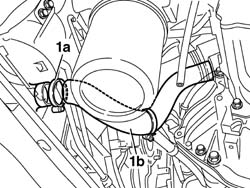
Applies to: engines: 1.6 16v; all production periods
1. Release collar (1a) securing the lower radiator sleeve (1b) and disconnect from the thermostat unit.
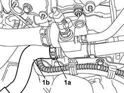
Applies to: engines: 1.6 16v; all production periods
1. Release collar (1a) on the engine oil filler fitting and release pipe (1b).
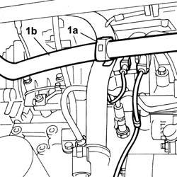
Applies to: engines: 1.6 16v; all production periods
1. Lower the vehicle and release the collar securing the pipe on the expansion tank.
2. Remove the lower radiator pipe from the engine compartment.
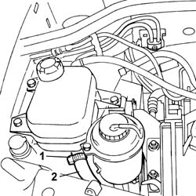
Applies to: engines: 1.6 16v; all production periods
Refitting
RemovingCheck the condition of the pipe.
Positon the pipe in the vehicle, connect it to the exapansion tank and secure the collar.
Close the collar retaining the lower radiator sleeve on the engine oil filler pipe.
Connect the lower radiator sleeve to the thermostat unit and radiator and secure by means of the collars.
Op. 0010T20 ENGINE COOLANT - CHANGE
Op. 7055B54 PROTECTION/GUARD UNDER ENGINE - R.R.
Connect the negative battery terminal.
Description | Connector | |
|---|---|---|
- | Battery |
Remove the vehicle from the lift.
Applies to: engines: 1.3 JTD 16V; all production periods
Removing
RefittingPosition the vehicle on a lift.
Carry out
Carry out
Op. 5530B52 BATTERY SUPPORT/DRIP TRAY - R.R..
Carry out
Op. 1048A40 HOSE FROM AIR FILTER TO FLOW METER - R.R..
Carry out
Op. 7055B54 PROTECTION/GUARD UNDER ENGINE - R.R..
Undo the engine coolant reservoir cap.
Arrange a suitable container to collect the coolant.
1. Prise up the pipe anchorage collars from the support brackets.
2. Press the retaining clips on the quick connector by hand, disconnect the lower cooant outlet sleeve from the radiator and drain the coolant into the container.
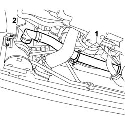
Applies to: engines: 1.3 JTD 16V; all production periods
1. Loosen the band (1a) using the appropriate tool and disconnect the lower coolant outlet hose (1b) from the radiator, water pump rigid coolant inlet pipe side.
Description | Code | |
|---|---|---|
1a | Caliper | 1.881.138.000 |
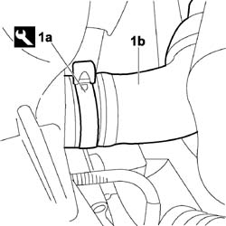
Applies to: engines: 1.3 JTD 16V; all production periods
1. Unscrew the three bolts (1a) securing the coolant reservoir and move aside bracket (1b).
2. Raise reservoir (2a), remove collar (2b) and disconnect system supply pipe (2c) from the reservoir and remove from the vehicle.
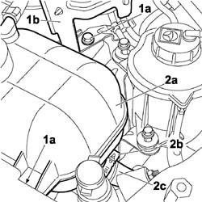
Applies to: engines: 1.3 JTD 16V; all production periods
Refitting
RemovingPosition the lwoer coolant outlet sleeve from the radiator on the vehicle, connect the supply pipe to the reservoir and use the appropriate tool to tighten the collar.
Description | Code | |
|---|---|---|
- | Caliper | 1.881.138.000 |
Place the reservoir in the housing.
Fit the mounting bracket and tighten the three fixing bolts.
Connect the lower sleeve to the rigid coolant intake sleeve to the coolant pump and use the appropriate tool to tighten the collar.
Description | Code | |
|---|---|---|
- | Caliper | 1.881.138.000 |
Connect the rapid connector for the radiator lower coolant outlet hose to the radiator.
Position the anchorage collars in their seats.
Carry out
Op. 7055B54 PROTECTION/GUARD UNDER ENGINE - R.R..
Carry out
Op. 1048A40 HOSE FROM AIR FILTER TO FLOW METER - R.R..
Carry out
Op. 5530B52 BATTERY SUPPORT/DRIP TRAY - R.R..
Carry out
Carry out
Op. 0010T20 ENGINE COOLANT - CHANGE.
Remove the vehicle from the lift.
Applies to: engines: 1.9 DIESEL; all production periods
Removing
RefittingOp. 5530B52 BATTERY SUPPORT/DRIP TRAY - R.R.
Op. 1048A10 AIR FILTER ASSEMBLY - R.R.
Op. 7055B54 PROTECTION/GUARD UNDER ENGINE - R.R.
Position a suitable container to collect the coolant.
1. Break the bands and disconnect the hose (1a) from the rigid pipe to the water pump and thermostat (1b). Also disconnect the sleeve from connector (1c) on the radiator.
2. Remove the lower engine coolant hose.
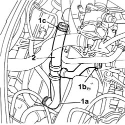
Applies to: engines: 1.9 DIESEL; all production periods
Refitting
RemovingCheck the condition of the hose.
Connect the radiator hose to the rigid pipe and thermostat.
There are notches in the flexible pipe which should be matched with the projections on the thermostat rigid pipe sections and the rigid pipe.
Fasten the pipe using new bands.
Op. 1048A10 AIR FILTER ASSEMBLY - R.R.
Op. 5530B52 BATTERY SUPPORT/DRIP TRAY - R.R.
Applies to: engines: 1.9 JTD 8V; all production periods
Removing
RefittingPosition the vehicle on a lift.
Proceed with the removal
Proceed with the removal
Op. 5530B52 BATTERY SUPPORT/DRIP TRAY - R.R..
Proceed with the removal
Op. 1048A40 HOSE FROM AIR FILTER TO FLOW METER - R.R..
Proceed with the removal
Op. 7055B54 PROTECTION/GUARD UNDER ENGINE - R.R..
1. Disconnect the lower radiator coolant outlet hose, radiator side.
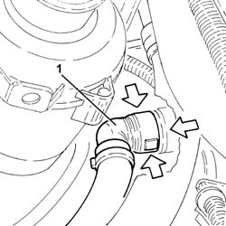
Applies to: engines: 1.9 JTD 8V; all production periods
1. Loosen the band and disconnect the lower coolant inlet hose from the radiator, water pump rigid coolant inlet pipe side and remove it.
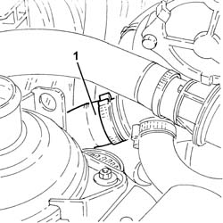
Applies to: engines: 1.9 JTD 8V; all production periods
Refitting
RemovingPlace the lower coolant outlet hose from the radiator back in its housing, connect it to the water pump rigid coolant inlet pipe and tighten the band.
Connect the lower radiator coolant outlet hose, radiator side.
Proceed with the refitting
Op. 7055B54 PROTECTION/GUARD UNDER ENGINE - R.R..
Proceed with the refitting
Op. 1048A40 HOSE FROM AIR FILTER TO FLOW METER - R.R..
Proceed with the refitting
Op. 5530B52 BATTERY SUPPORT/DRIP TRAY - R.R..
Proceed with the refitting
Refill the engine cooling system
Op. 0010T20 ENGINE COOLANT - CHANGE.
Remove the vehicle from the lift.
Applies to: engines: 1.4 8v; all production periods
Removing
Refitting- Position the vehicle on a lift.
- Turn the ignition key to the OFF position.
- Disconnect the negative battery terminal.
Description | Connector | |
|---|---|---|
- | BATTERY |
- Position a suitable container for collecting the engine coolant beneath the vehicle.
Op. 0010T20 ENGINE COOLANT - CHANGE
1. Using the special tool, loosen the fastening band (1a) and disconnect the coolant outlet pipe (1b) from the radiator.
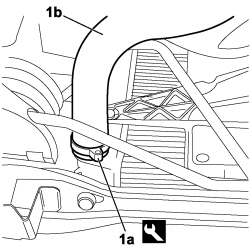
Applies to: engines: 1.4 8v; all production periods
1. Use an appropriate tool to remove collars (1a) securing the coolant return pipe to the water pump and (1b) securing the coolant return pipe from the passenger compartment heater.
2. Release the branch of the return pipe from the passenger compartment heater from the anchorage bracket.
3. Disconnect the coolant outlet pipe from the passenger compartment heater connection, from the return pipe to the pump and remove from the vehicle.
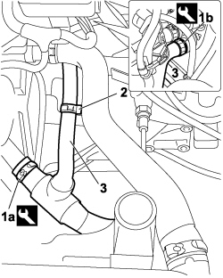
Applies to: engines: 1.4 8v; all production periods
Refitting
Removing- Position the coolant delivery pipe in the engine compartment.
- Connect the coolant outlet pipe to the radiator and secure with a new collar.
- Connect the branch of the coolant return pipe to the passenger compartment heater and secure with a new collar.
- Connect the sleeve to the return pipe to the water pump, then secure by means of a new collar.
Op. 0010T20 ENGINE COOLANT - CHANGE
- Connect the negative battery terminal.
Description | Connector | |
|---|---|---|
- | BATTERY |
Topics linked from this page (7)
- 0010T20 coolant change
- 1048A10 air cleaner filtering element - replace
- 1048A40 sleeve from air cleaner to flow meter - r + r
- 5530B10 battery - r+r
- 5530B52 Battery DRIP TRAY/SUPPORT - R.R.
- 7055B54 under-engine guard - r r
- A001 BATTERY